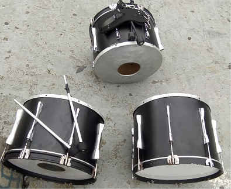

TAMBORA
La tambora es un instrumento de origen africano, que forma parte del grupo de instrumentos de percusión. Desde la Antigua China, hasta Persia y Africa se tienen rastros de anta 4o sobre esta clase de utilería musical.
consistente en una caja de resonancia, generalmente de forma cilíndrica, cerrada por un extremoo por los doscon un parche de piel muy tensa o una membrana de material plástico, que se toca con dos baquetas, con una maza o con las manos.
